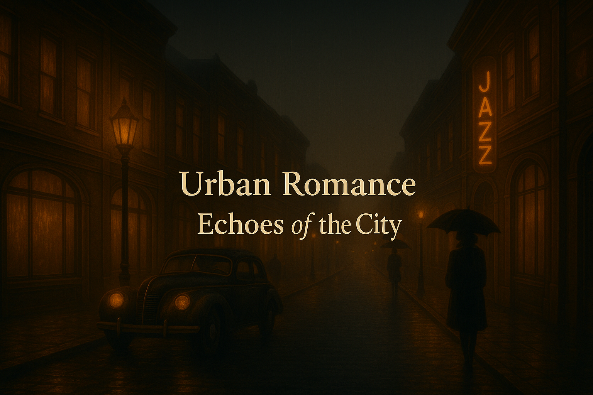
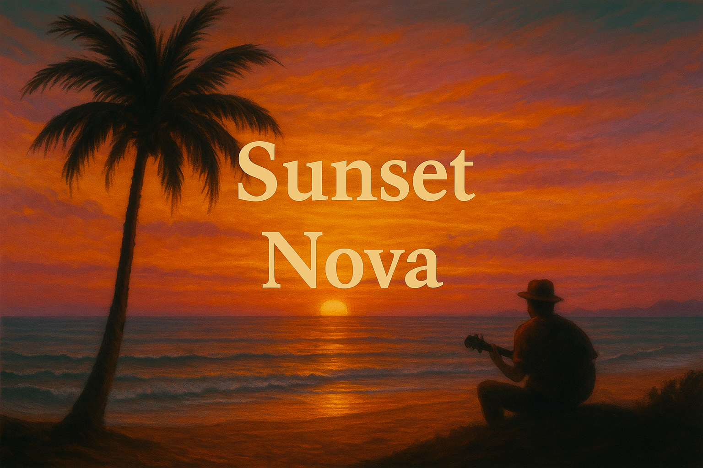

Where lights, stories and memories meet under the city sky.

Streets Of Old Town
City Lights Waltz
Sunrise Boulevard
Festival in the Old Town Square
Theatre Lane
“I really appreciate the atmosphere you’ve created. The synth textures and ambient flow make for a relaxing and immersive listening experience.”
— Giovanni Orlando, Mindscape Melodies
“Very cool. Great arrangement and performance. Well mixed and balanced.”
— Focusing Minimal Piano & Contemporary Classical
“We appreciate the unique samba lounge instrumental vibe you brought.”
— Cantores Del Mundo
Sunset Nova — Stories Told in Samba and Light
Golden-hour warmth, bossa nova & gentle nostalgia.

Invitation To Bossa Nova
Silent Sea Shore
Bossa Nova Dreams
Cafe Rio
Sunset Samba
“We’re looking for lighter sounds with soft melodies and textures… We hope to hear more from you.”
— Bruma del Sur (Patagonia)
“Great work on the instrumental — the piano sounds very nice. You create an interesting stereo image and a strong structure.”
— David from Palette
“This is a really cool piece — well played and well produced too.”
— Monie Forrs
Nature Notes: Songs from the Meadow
Acoustic textures, air and calm reflections.
Majestic Nature
A New Day Begins
Misty Morning Melody
My Garden of Love
New Sunrise
"A captivating composition that creates a very effective lounge atmosphere. I’ve enjoyed the positive vibe it evokes."
— Geno Moy
"As if the wind itself hummed these tunes while drifting through the fields."
— Imaginary Sound Review
A bouquet of quiet emotions, gathered from the meadow at dawn."
— The Harmonic Journal
Folk Stories: Whispered on the Wind
Folk-inspired instrumentals with a lyrical heart.
Village Wedding
Sun-kissed Sicily
My Friend Cowboy
Irish Dreams
Magic Forest
“We like the movement and production of your track. Nice use of the stereo-field.”
— ambiqo records
“Thank you for your submission — I took the time to listen and genuinely appreciate your interest.”
— Samyula
“Nicely produced, with great instrumental melodies and quality sound. We appreciate the effort and creativity.”
— Vibe Agency
Night Letters — Letters Never Sent
Slow, contemplative, intimate.
Missing You
Stay With Me
It Was a Long Time Ago
She Said Goodbye
Shadows of Past
“Nice track — the guitar performance was solid.”
— Bad Architect Records
“Beautiful work. Sweet melody and gentle interpretation that transports me to an intimate feeling.”
— Peaceful Notes
“I like the track — I’d be happy to hear more.”
— PAKO MUSIC
Circus Scenes
Retro fairground moods, humor and bittersweet nostalgia.
Clown
Dark Circus
Ceremony
Dancing Silhouettes
Joke
"More than music — it’s a tumble through memory, laughter, and sawdust light."
— Vintage Sound Monthly
"An acrobatic dance of melody and mischief — both charming and bittersweet."
— The Audio Gazette
"You can almost smell the popcorn and hear the ringmaster smile."
— Listener’s Lantern
Childhood Lights
Small wonders, gentle melodies and warm memories.
A Pocket Full of Sunshine
Dancing Toys
Little Hands, Big Hearts
Mommy’s Melody
The Magic of Small Moments
“Lullaby for the Stars is a beautifully crafted piece... a delicate and immersive composition.”
— Mindful Playlist Curator
“Eine schöne Komposition... aber mir leider zu lieblich und süß.”
— speedchill
“Congratulations on the composition and production! We like the Bossa Nova song.”
— Musilink
Moonlight Diaries
Nocturnes, reflections and quiet night walks.
Chapter One – Your Keys Are Still in the Bowl
Chapter Two – Coffee on the Porch
Chapter Three – The Dog Always Knew First
Chapter Four – I Remember Your Sweater
Chapter Five – You Said It Would Rain
"Beautiful work. Sweet melody and warm instrumentation that transports me to a cozy feeling."
— Peaceful Notes
"Nice track overall and I thought it had some decent ideas."
— Bad Architect Records
"Congratulations on the composition and production! We like the Bossa Nova song."
— Musilink